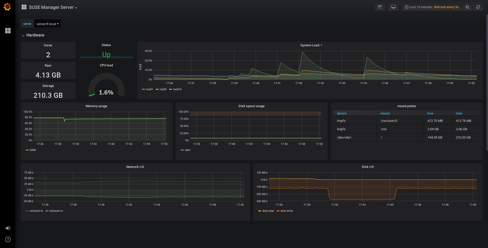

Monitoring with Prometheus and Grafana
You can monitor your SUSE Manager environment using Prometheus and Grafana. SUSE Manager Server and Proxy are able to provide self-health metrics. You can also install and manage a number of Prometheus exporters on Salt clients.
Prometheus and Grafana packages are included in the SUSE Manager Client Tools for:
-
SUSE Linux Enterprise 12
-
SUSE Linux Enterprise 15
-
openSUSE Leap 15.x
You need to install Prometheus and Grafana on a machine separate from the SUSE Manager Server. We recommend to use a managed Salt SUSE client as your monitoring server. Other clients are not supported as a monitoring server.
Prometheus fetches metrics using a pull mechanism, so the server must be able to establish TCP connections to monitored clients. Clients must have corresponding open ports and be reachable over the network. Alternatively, you can use reverse proxies to establish a connection.
|
You must have a monitoring add-on subscription for each client you want to monitor. Visit the SUSE Customer Center to manage your SUSE Manager subscriptions. |
1. Prometheus and Grafana
1.1. Prometheus
Prometheus is an open-source monitoring tool that is used to record real-time metrics in a time-series database. Metrics are pulled via HTTP, enabling high performance and scalability.
Prometheus metrics are time series data, or timestamped values belonging to the same group or dimension. A metric is uniquely identified by its name and set of labels.
metric name labels timestamp value
┌────────┴───────┐ ┌───────────┴───────────┐ ┌──────┴──────┐ ┌─┴─┐
http_requests_total{status="200", method="GET"} @1557331801.111 42236
Each application or system being monitored must expose metrics in the format above, either through code instrumentation or Prometheus exporters.
1.2. Prometheus Exporters
Exporters are libraries that help with exporting metrics from third-party systems as Prometheus metrics. Exporters are useful whenever it is not feasible to instrument a given application or system with Prometheus metrics directly. Multiple exporters can run on a monitored host to export local metrics.
The Prometheus community provides a list of official exporters, and more can be found as community contributions. For more information and an extensive list of exporters, see https://prometheus.io/docs/instrumenting/exporters/.
1.3. Grafana
Grafana is a tool for data visualization, monitoring, and analysis. It is used to create dashboards with panels representing specific metrics over a set period of time. Grafana is commonly used together with Prometheus, but also supports other data sources such as ElasticSearch, MySQL, PostgreSQL, and Influx DB. For more information about Grafana, see https://grafana.com/docs/.
2. Set up the Monitoring Server
To set up your monitoring server, you need to install Prometheus and Grafana, and configure them.
2.1. Install Prometheus
If your monitoring server is a Salt client, you can install the Prometheus package using the SUSE Manager Web UI. Otherwise you can download and install the package on your monitoring server manually. The Prometheus software is also available for SUSE Manager Proxy and SUSE Manager for Retail Branch Server.
|
Prometheus expects POSIX filesystem for storing data. Non-POSIX compliant filesystems are not supported. NFS filesystems are not supported. |
-
In the SUSE Manager Web UI, open the details page of the system where Prometheus is to be installed, and navigate to the
Formulastab. -
Check the
Prometheuscheckbox to enable monitoring formulas, and click Save. -
Navigate to the
Prometheustab in the top menu. -
In the
SUSE Manager Serversection, enter valid SUSE Manager API credentials. Make sure that the credentials you have entered allow access to the set of systems you want to monitor. -
Customize any other configuration options according to your needs.
-
Click Save Formula.
-
Apply the highstate and confirm that it completes successfully.
-
Check that the Prometheus interface loads correctly. In your browser, navigate to the URL of the server where Prometheus is installed, on port 9090 (for example,
http://example.com:9090).
For more information about the monitoring formulas, see Monitoring Formula.
-
On the monitoring server, install the
golang-github-prometheus-prometheuspackage:zypper in golang-github-prometheus-prometheus
-
Enable the Prometheus service:
systemctl enable --now prometheus
-
Check that the Prometheus interface loads correctly. In your browser, navigate to the URL of the server where Prometheus is installed, on port 9090 (for example,
http://example.com:9090). -
Open the configuration file at
/etc/prometheus/prometheus.ymland add this configuration information. Replaceserver.urlwith your SUSE Manager server URL and adjustusernameandpasswordfields to match your SUSE Manager credentials.# {productname} self-health metrics scrape_configs: - job_name: 'mgr-server' static_configs: - targets: - 'server.url:9100' # Node exporter - 'server.url:9187' # PostgreSQL exporter - 'server.url:5556' # JMX exporter (Tomcat) - 'server.url:5557' # JMX exporter (Taskomatic) - 'server.url:9800' # Taskomatic - targets: - 'server.url:80' # Message queue labels: __metrics_path__: /rhn/metrics # Managed systems metrics: - job_name: 'mgr-clients' uyuni_sd_configs: - server: "http://server.url" username: "admin" password: "admin" relabel_configs: - source_labels: [__meta_uyuni_exporter] target_label: exporter - source_labels: [__address__] replacement: "No group" target_label: groups - source_labels: [__meta_uyuni_groups] regex: (.+) target_label: groups - source_labels: [__meta_uyuni_minion_hostname] target_label: hostname - source_labels: [__meta_uyuni_primary_fqdn] regex: (.+) target_label: hostname - source_labels: [hostname, __address__] regex: (.*);.*:(.*) replacement: ${1}:${2} target_label: __address__ - source_labels: [__meta_uyuni_metrics_path] regex: (.+) target_label: __metrics_path__ - source_labels: [__meta_uyuni_proxy_module] target_label: __param_module - source_labels: [__meta_uyuni_scheme] target_label: __scheme__ -
Save the configuration file.
-
Restart the Prometheus service:
systemctl restart prometheus
For more information about the Prometheus configuration options, see the official Prometheus documentation at https://prometheus.io/docs/prometheus/latest/configuration/configuration/.
2.2. Install Grafana
If your monitoring server is a Salt client, you can install the Grafana package using the SUSE Manager Web UI. Otherwise you can download and install the package on your monitoring server manually.
|
Grafana is not available on SUSE Manager Proxy. |
-
In the SUSE Manager Web UI, open the details page of the system where Grafana is to be installed, and navigate to the
Formulastab. -
Check the
Grafanacheckbox to enable monitoring formulas, and click Save. -
Navigate to the
Grafanatab in the top menu. -
In the
Enable and configure Grafanasection, enter the admin credentials you want to use to log in Grafana. -
On the
Datasourcessection, make sure that the Prometheus URL field points to the system where Prometheus is running. -
Customize any other configuration options according to your needs.
-
Click Save Formula.
-
Apply the highstate and confirm that it completes successfully.
-
Check that the Grafana interface is loading correctly. In your browser, navigate to the URL of the server where Grafana is installed, on port 3000 (for example,
http://example.com:3000).
|
SUSE Manager provides pre-built dashboards for server self-health, basic client monitoring, and more. You can choose which dashboards to provision in the formula configuration page. |
-
Install the
grafanapackage:zypper in grafana
-
Enable the Grafana service:
systemctl enable --now grafana-server
-
In your browser, navigate to the URL of the server where Grafana is installed, on port 3000 (for example,
http://example.com:3000). -
On the login page, enter
adminfor username and password. -
Click Log in. If login is successful, then you will see a prompt to change the password.
-
Click OK on the prompt, then change your password.
-
Move your cursor to the cog icon on the side menu which will show the configuration options.

-
Click Data sources.
-
Click Add data source to see a list of all supported data sources.
-
Choose the Prometheus data source.
-
Make sure to specify the correct URL of the Prometheus server.
-
Click Save & test.
-
To import a dashboard click the + icon in the side menu, and then click Import.
-
For SUSE Manager server overview load the dashboard ID:
17569. -
For SUSE Manager clients overview load the dashboard ID:
17570.
|
3. Configure SUSE Manager Monitoring
With SUSE Manager 4 and higher, you can enable the server to expose Prometheus self-health metrics, and also install and configure exporters on client systems.
3.1. Server Self Monitoring
The Server self-health metrics cover hardware, operating system and SUSE Manager internals. These metrics are made available by instrumentation of the Java application, combined with Prometheus exporters.
These exporter packages are shipped with SUSE Manager Server:
-
Node exporter:
golang-github-prometheus-node_exporter. See https://github.com/prometheus/node_exporter. -
PostgreSQL exporter:
prometheus-postgres_exporter. See https://github.com/wrouesnel/postgres_exporter. -
JMX exporter:
prometheus-jmx_exporter. See https://github.com/prometheus/jmx_exporter. -
Apache exporter:
golang-github-lusitaniae-apache_exporter. See https://github.com/Lusitaniae/apache_exporter.
These exporter packages are shipped with SUSE Manager Proxy:
-
Node exporter:
golang-github-prometheus-node_exporter. See https://github.com/prometheus/node_exporter. -
Squid exporter:
golang-github-boynux-squid_exporter. See https://github.com/boynux/squid-exporter.
The exporter packages are pre-installed in SUSE Manager Server and Proxy, but their respective systemd daemons are disabled by default.
-
In the SUSE Manager Web UI, navigate to .
-
Click Enable services.
-
Restart Tomcat and Taskomatic.
-
Navigate to the URL of your Prometheus server, on port 9090 (for example,
http://example.com:9090) -
In the Prometheus UI, navigate to menu:[Status > Targets] and confirm that all the endpoints on the
mgr-servergroup are up. -
If you have also installed Grafana with the Web UI, the server insights are visible on the SUSE Manager Server dashboard.
|
Only server self-health monitoring can be enabled using the Web UI. Metrics for a proxy are not automatically collected by Prometheus. To enable self-health monitoring on a proxy, you need to manually install exporters and enable them. |
The following relevant metrics are collected on the SUSE Manager Server.
| Metric | Type | Description |
|---|---|---|
uyuni_all_systems |
gauge |
Number of all systems |
uyuni_virtual_systems |
gauge |
Number of virtual systems |
uyuni_inactive_systems |
gauge |
Number of inactive systems |
uyuni_outdated_systems |
gauge |
Number of systems with outdated packages |
| Metric | Type | Description |
|---|---|---|
pg_stat_database_tup_fetched |
counter |
Number of rows fetched by queries |
pg_stat_database_tup_inserted |
counter |
Number of rows inserted by queries |
pg_stat_database_tup_updated |
counter |
Number of rows updated by queries |
pg_stat_database_tup_deleted |
counter |
Number of rows deleted by queries |
mgr_serveractions_completed |
gauge |
Number of completed actions |
mgr_serveractions_failed |
gauge |
Number of failed actions |
mgr_serveractions_picked_up |
gauge |
Number of picked-up actions |
mgr_serveractions_queued |
gauge |
Number of queued actions |
| Metric | Type | Description |
|---|---|---|
java_lang_Threading_ThreadCount |
gauge |
Number of active threads |
java_lang_Memory_HeapMemoryUsage_used |
gauge |
Current heap memory usage |
| Metric | Type | Description |
|---|---|---|
message_queue_thread_pool_threads |
counter |
Number of message queue threads ever created |
message_queue_thread_pool_threads_active |
gauge |
Number of currently active message queue threads |
message_queue_thread_pool_task_count |
counter |
Number of tasks ever submitted |
message_queue_thread_pool_completed_task_count |
counter |
Number of tasks ever completed |
| Metric | Type | Description |
|---|---|---|
taskomatic_scheduler_threads |
counter |
Number of scheduler threads ever created |
taskomatic_scheduler_threads_active |
gauge |
Number of currently active scheduler threads |
taskomatic_scheduler_completed_task_count |
counter |
Number of tasks ever completed |
3.2. Monitoring Managed Systems
Prometheus metrics exporters can be installed and configured on Salt clients using formulas. The packages are available from the SUSE Manager client tools channels, and can be enabled and configured directly in the SUSE Manager Web UI.
These exporters can be installed on managed systems:
-
Node exporter:
golang-github-prometheus-node_exporter. See https://github.com/prometheus/node_exporter. -
PostgreSQL exporter:
prometheus-postgres_exporter. See https://github.com/wrouesnel/postgres_exporter. -
Apache exporter:
golang-github-lusitaniae-apache_exporter. See https://github.com/Lusitaniae/apache_exporter.
|
On SLE Micro, only the Node exporter and the Blackbox exporter are available. |
When you have the exporters installed and configured, you can start using Prometheus to collect metrics from monitored systems. If you have configured your monitoring server with the Web UI, metrics collection happens automatically.
-
In the SUSE Manager Web UI, open the details page of the client to be monitored, and navigate to the menu:Formulas tab.
-
Check the
Enabledcheckbox on thePrometheus Exportersformula. -
Click Save.
-
Navigate to the tab.
-
Select the exporters you want to enable and customize arguments according to your needs. The
Addressfield accepts either a port number preceded by a colon (:9100), or a fully resolvable address (example:9100). -
Click Save Formula.
-
Apply the highstate.
|
Monitoring formulas can also be configured for System Groups, by applying the same configuration used for individual systems inside the corresponding group. |
For more information about the monitoring formulas, see Monitoring Formula.
3.3. Change Grafana Password
To change the Grafana password follow the steps described in the Grafana documentation:
In case you have lost the Grafana administrator password you can reset it as root with the following command:
grafana-cli --configOverrides cfg:default.paths.data=/var/lib/grafana --homepath /usr/share/grafana admin reset-admin-password <new_password>
4. Network Boundaries
Prometheus fetches metrics using a pull mechanism, so the server must be able to establish TCP connections to monitored clients. By default, Prometheus uses these ports:
-
Node exporter: 9100
-
PostgreSQL exporter: 9187
-
Apache exporter: 9117
Additionally, if you are running the alert manager on a different host than where you run Prometheus, you also need to open port 9093.
For clients installed on cloud instances, you can add the required ports to a security group that has access to the monitoring server.
Alternatively, you can deploy a Prometheus instance in the exporters' local network, and configure federation. This allows the main monitoring server to scrape the time series from the local Prometheus instance. If you use this method, you only need to open the Prometheus API port, which is 9090.
For more information on Prometheus federation, see https://prometheus.io/docs/prometheus/latest/federation/.
You can also proxy requests through the network boundary. Tools like PushProx deploy a proxy and a client on both sides of the network barrier and allow Prometheus to work across network topologies such as NAT.
For more information on PushProx, see https://github.com/RobustPerception/PushProx.
4.1. Reverse Proxy Setup
Prometheus fetches metrics using a pull mechanism, so the server must be able to establish TCP connections to each exporter on the monitored clients. To simplify your firewall configuration, you can use reverse proxy for your exporters to expose all metrics on a single port.
-
In the SUSE Manager Web UI, open the details page of the system to be monitored, and navigate to the
Formulastab. -
Check the
Prometheus Exporterscheckbox to enable the exporters formula, and click Save. -
Navigate to the
Prometheus Exporterstab in the top menu. -
Check the
Enable reverse proxyoption, and enter a valid reverse proxy port number. For example,9999. -
Customize the other exporters according to your needs.
-
Click Save Formula.
-
Apply the highstate and confirm that it completes successfully.
For more information about the monitoring formulas, see Monitoring Formula.
5. Security
Prometheus server and Prometheus node exporter offer a built-in mechanism to secure their endpoints with TLS encryption and authentication. SUSE Manager Web UI simplifies the configuration of all involved components. The TLS certificates have to be provided and deployed by the user. SUSE Manager offers enabling the following security model:
-
Node exporter: TLS encryption and client certificate based authentication
-
Prometheus: TLS encryption and basic authentication
For more information about configuring all available options, see Monitoring Formula.
5.1. Generating TLS certificates
By default, SUSE Manager does not provide any certificates for securing monitoring configuration. For providing security, you can generate or import custom certificates, self-signed or signed by a third party certificate authority (CA).
This section demonstrates how to generate client/server certificates for Prometheus and Node exporter minions self-signed with SUSE Manager CA.
-
On the SUSE Manager Server, at the command prompt, run following command:
rhn-ssl-tool --gen-server --dir="/root/ssl-build" --set-country="COUNTRY" \ --set-state="STATE" --set-city="CITY" --set-org="ORGANIZATION" \ --set-org-unit="ORGANIZATION UNIT" --set-email="name@example.com" \ --set-hostname="minion.example.com" --set-cname="minion.example.com" --no-rpm
Ensure that the
set-cnameparameter is the fully qualified domain name (FQDN) of your Salt client. You can use the theset-cnameparameter multiple times if you require multiple aliases. -
Copy
server.crtandserver.keyfiles to the Salt minion and provide read access forprometheususer.